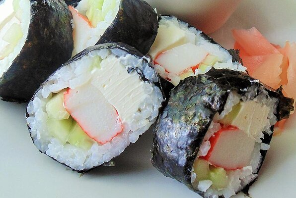

Cream Cheese and Crab Sushi Roll

Make Sushi Like a Pro
Delicious and surprisingly simple to make. Sushi is expensive to buy at the supermarket,
so making your own will save you tons of money. Enjoy!
Ingredients
- 1 cup uncooked white rice
- 2 cups water
- 2 tablespoons rice vinegar
- 1 teaspoon salt
- 2 sheets nori seaweed sheets
- ¼ cucumber, peeled and sliced lengthwise
- 2 pieces imitation crab legs
- ½ (3 ounce) package cream cheese, sliced
- 1 teaspoon minced fresh ginger root
Steps
- Bring the rice and water to a boil in a saucepan over high heat.
Reduce heat to medium-low, cover, and simmer until the rice is tender, and the liquid has been absorbed,
20 to 25 minutes. Stir in rice vinegar and salt. Allow to cool completely.
- Lay out seaweed sheets. Moisten hands with water, then spread the rice evenly on each sheet,
leaving a 1/2 inch gap along one edge, lengthwise. Arrange strips of cucumber, imitation crabmeat,
and cream cheese in a straight line along the side opposite of the gap. Roll the sushi from the
toppings to the exposed end of the the seaweed sheet.
- Using a sharp wet knife, slice each roll into 5 or 6 pieces. Serve with minced ginger on the side.